How to Securely Connect to Provider’s service via AWS PrivateLink
There are several ways to provide access to resources located in the AWS environment. For instance, we can use VPC Peering, VPN, Direct Connect or even PrivateLink. For today, we will explore a basic architecture concept and how Endpoint Services (PrivateLink) could help us to make a specific service available from VPC-Provider to VPC-Consumer.
What is AWS PrivateLink?
AWS PrivateLink brings us the ability to access some AWS resources or services provided by an AWS account privately. In order to do so, AWS PrivateLink endpoint is created directly in the VPC-Consumer and it uses an ENI along with a private IP that belongs to the VPC-Consumer.[1]
VPC endpoints concepts:
"VPC endpoint — The entry point in your VPC that enables you to connect privately to a service. The following are the different types of VPC endpoints.
You create the type of VPC endpoint required by the supported service.
- Gateway endpoint;
- Interface endpoint;
- Gateway Load Balancer endpoint;
Endpoint service — Your own application or service in your VPC. Other AWS principals can create an endpoint from their VPC to your endpoint service.
AWS PrivateLink — A technology that provides private connectivity between VPCs and services.” [2]
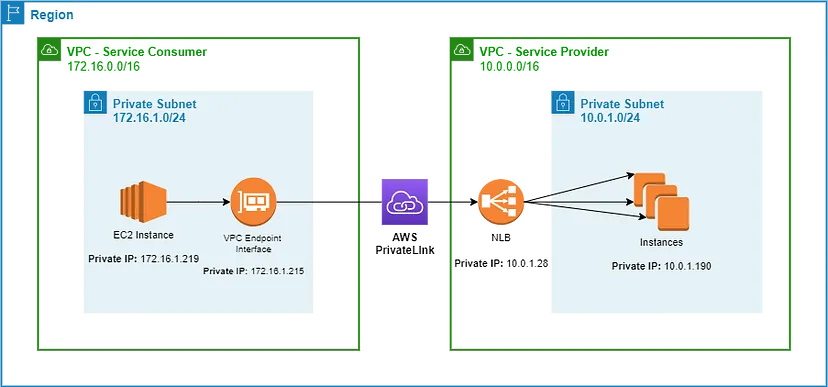In order to demonstrate the communication occurring between the consumer and the provider, we set up two VPCs, both containing a private subnet which we deployed two EC2 instances, one EC2 that will be used to simulate a client’s access and another one that will be used as HTTP server respectively.
VPC Console:
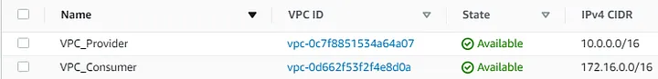EC2 Dashboard:
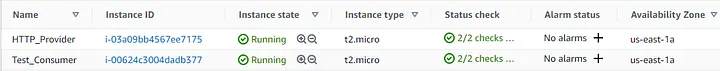After we deployed the EC2 instances, the next step is to create an internal NLB and associate its target to the HTTP_Provider EC2 instance.
Load Balancers:
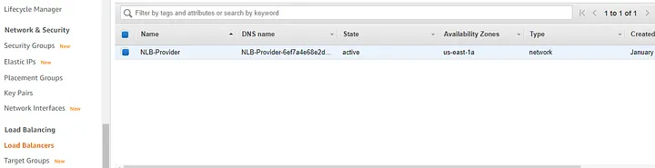Now, it is time to create our endpoint service which will be used later on by the consumer. For this, go to “VPC service” and then navigate to the left panel and select “Endpoint Services”, click on “create” service and then select our “NLB-Provider”.
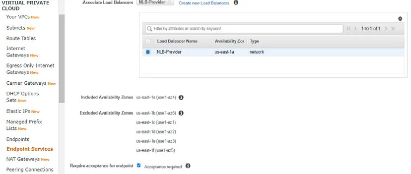 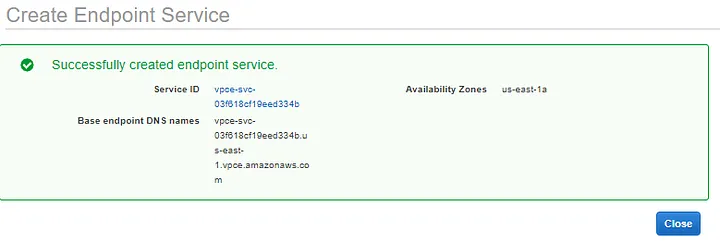NLB-Provider-Endpoint:
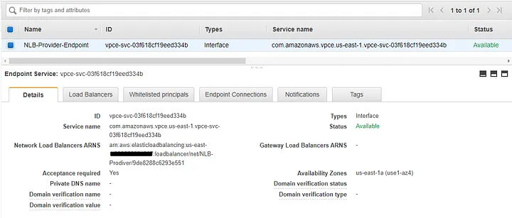Next step, we are going to create the endpoint in VPC_Consumer. So, go to “Endpoints” on “VPC service” and then select the “Find service by name” option, paste the NLB-Provider’s service name that we have just created. For example: com.amazonaws.vpce.us-east-1.vpce-svc-03f618cf19eed334b
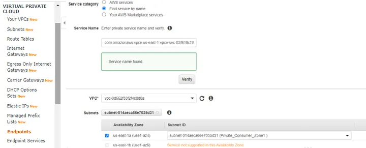Select the appropriate security group to be attached on the endpoint:
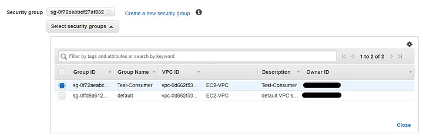The NLB_Endpoint_Consumer was created and placed in VPC_Consumer, but it is in “pending acceptance” status.
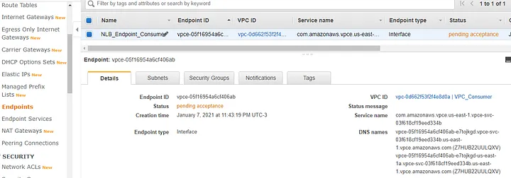To accept the pending request, go to “Endpoint Services”, select the “Endpoint Connections” tab, select the endpoint with “Pending Acceptance” state, click “Actions” and choose “Accept endpoint connection request”.
NLB_Provider_Endpoint:
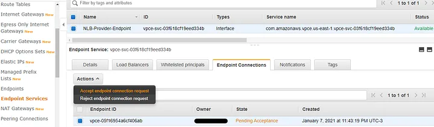After accepting the request, go back to “Endpoints” and check that NLB_Endpoint_Consumer state changed from “Pending_Acceptance” to “Available”.
NLB_Endpoint_Consumer:
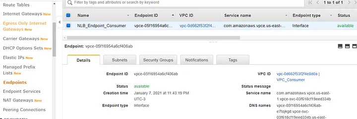Finally, let’s check out the results and see what we have achieved here. The first screen below shows us that the NLB_Endpoint_Consumer has an ENI and the DNS resolves to a private IP from the VPC_Consumer’s privates subnet.

To test the connectivity, we can use the curl command and run it against the NLB_Endpoint_Consumer’s DNS. In our example, we got a “Connected” status along with 200 code from the application. It means, it worked!
Test_Consumer — EC2:
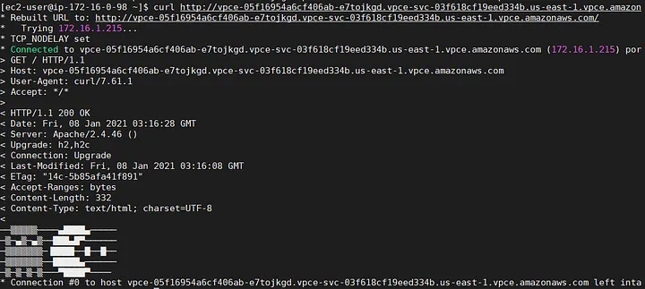The same test but now executed from the HTTP_Provider EC2.
HTTP_Provider EC2:
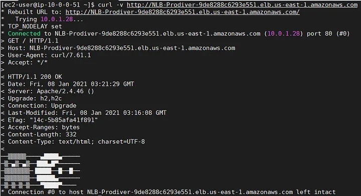Considerations:
“When the service provider and the consumer are in different accounts, use the Availability Zone ID to uniquely and consistently identify the endpoint service Availability Zone.
Service providers can specify a private DNS name for a new endpoint service, or an existing endpoint service. To use a private DNS name, enable the feature, and then specify a private DNS name. Before consumers can use the private DNS name, you must verify that you have control of the domain/subdomain.” [3]
Benefits:
- Do not need a NAT device, VPN connection, Internet gateway or even AWS Direct Connect.
- Traffic is kept on AWS backbone Infrastructure.
- Policies and Security groups can be applied.
- Different consumers can have the same CIDR with no problem.
Conclusion:
AWS PrivateLink is an easy way to provide secure and private connection to resources in a VPC. Moreover, it does not require a NAT device, VPN or even Direct Connect to provide access to a running service from a VPC. So, for some scenarios this solution explored above may be useful.
Sources:
- https://docs.aws.amazon.com/whitepapers/latest/aws-vpc-connectivity-options/aws-privatelink.html
- https://docs.aws.amazon.com/vpc/latest/userguide/endpoint-services-overview.html
- https://docs.aws.amazon.com/vpc/latest/userguide/endpoint-services-overview.html